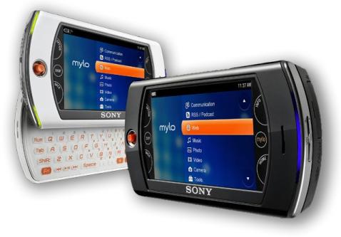

mylo style!
Welcome to Mylo Style, your online hub for all things Mylo COM-2. Discover the Mylo's features, download cool new software, and even learn how to create your very own COM-2 widgets!
what is the mylo?
The year is 2008. You love to surf the web, chat with friends on Skype, and keep up with your favorite blogs via RSS. You wish you could take all of this with you when you're on-the-go and not at home by your computer, but smartphones aren't really all that popular yet (and besides, cellular data plans are prohibitively expensive at this time), so how can you do it? Fortunately, Sony has you covered - you can do all this and more with the Mylo!
The Mylo ("my life online") is a series of handheld devices created by Sony that provide portable web access, instant messaging, and media playback. These aren't smartphones though! These are dedicated web-browsing devices that connect to the internet via Wi-Fi hotspots instead of 3G or 4G. Sony released two models of the Mylo - the original COM-1 in 2006, and the much improved COM-2 in 2008, which adds custom widget support, a touchscreen, a built-in camera, upgraded Wi-Fi connectivity, and a variety of other improvements. This website primarily focuses on the COM-2 model of the Mylo.
site news & updates [RSS]
- Loading...
about the webmaster
This website is operated by Frost Sheridan. You can visit my personal site at www.cyberdragon.digital, and the best way to contact me is to send me an email at frostsheridan@posteo.net.